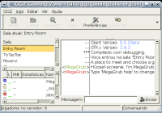
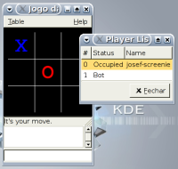
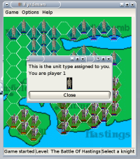

Überblick über die GGZ Gaming Zone
Deutsche Übersetzung von: GGZ Gaming Zone OverviewOriginal: Revision 0.1 vom 26.02.2005
Autor des Originals: Josef Spillner <josef at ggzgamingzone dot org>
Datum: 10.03.2005
Übersetzer: Josef Spillner <josef at ggzgamingzone dot org>
Die hierin angebotenen Informationen sind für Leute gedacht, die noch nie etwas von GGZ gehört haben und einen ersten Eindruck vom Projekt bekommen möchten. Sie sind weder komplett noch enthalten sie irgendwelche Informationen für Entwickler oder Server-Hoster - dazu wendet man sich an die auf diese Themen spezialisierten Anleitungen.
Aller Anfang ist schwer...
Es gibt heutzutage eine Menge an freien Spielen. Viele von ihnen bieten Multiplayer-Unterstützung wie die Verbindung zu einem Server oder das Auffinden von offenen Spielen über einen Metaserver. Aber nur wenige von ihnen bieten mehr. Das ist der Punkt, wo GGZ ins Spiel kommt. Es vereinfacht die Netzwerkspiele-Integration unter etlichen Aspekten. Einige Spiele nutzen nur Teile der GGZ-Infrastruktur, andere hingegen so viel wie möglich.
Die Software, aus der GGZ besteht, wird im nächsten Kapitel beschrieben werden. Wichtig zu wissen ist, dass obwohl das Projekt jede Menge eigene Spiele mitbringt, es auch eine Plattform für Entwickler bietet, auf der diese ihre Spiele aufbauen können. GGZ-Spiele sind bisher größtenteils auf Brett- und Kartenspiele beschränkt, aber es gibt keine Grenzen bezüglich der Unterstützung anderer Spiele.
Die Software, aus der GGZ gemacht ist.
Der erste Eindruck, den Spieler von GGZ bekommen, entsteht meist aufgrund der sogenannten Core-Clients, welche man sich als spielefähige Chatprogramme vorstellen kann. Momentan gibt es sie für die Kommandozeile, Gtk+, KDE und GNOME im Desktopbereich, sowie SDL.

Zusätzlich ist es möglich, Spielstartmechanismen in traditionelle Chat-Clients oder IM-Clients zu integrieren, desweiteren in Schnellstarter und sogar in die Spiele selbst.

Die Spiele kommen in verschiedenen Ausführungen, von denen einige hier beschrieben werden sollen. Für jedes Spiel existiert ein Protokoll, für das es mehrere Server oder Clients gibt. Meist gibt es genau einen Server und ein oder zwei Clients dafür. Die Clients sind kompatibel, aber sie unterscheiden sich in ihren Merkmalen. Beispielsweise kann eines nebenher auch einen Einzelspielermodus unterstützen, während das andere nur auf einem GGZ-Server gespielt werden kann. Andere unterscheidbare Eigenschaften sind Unterstützung für Spieleroptionen (Highscores und Spielerlisten anzeigen, Spieler hinauswerfen), Aktualisierung von Themes oder Levels aus dem Internet, Fortsetzung von abgebrochenen Spielen, Zuschauerunterstützung, konfigurierbare KI-Spieler und Spielwiedergabe.

Eine weitere wichtige Komponente ist der GGZ-Server, seine Datenbank und die darauf aufsetzende Webschnittstelle, für welche eine Referenzimplementierung unter dem Namen GGZ Community existiert und permanent für Spieler auf der ganzen Welt verfügbar ist. Ein Chatbot ist ebenfalls auf dem Server aktiv und beantwortet Fragen, und möchte manchmal sogar ein Spiel mitspielen.

Unter Verwendung der Software in allen Kombinationen ist es möglich, Tournaments zu veranstalten, individuelle Partien mit Wunschgegnern zu organisieren, Teams zu verwalten, das Karma der Mitspieler zu kontrollieren, und allgemein gute Bewertungen und Highscores zu bekommen.
Der Einstieg ins Projekt
Jeder, der an dem Projekt Interesse hat, ist eingeladen sich auf die extrem sparsame Mailingliste ggz-announce einzuschreiben. Nur die wichtigsten Informationen werden hierher gesendet, etwa zweimal pro Jahr. Man sollte sicherstellen, keinerlei Informationen zum Projekt zu verpassen!
Spieler, die nur die Spiele und Community ausprobieren möchten, sollten die für ihr Betriebssystem passenden Pakete heraussuchen, oder GGZ von Hand compilieren. Die Informationen dazu findet man in jedem Paket in den Dateien QuickStart.GGZ und README.GGZ.
Entwickler sollten sich auf die Mailingliste ggz-dev eintragen und dort über ihre Pläne reden. Es sind etliche Projekte im Entwicklungsstadium, und noch sind sie nicht alle dokumentiert, so daß Nachfragen das Risiko doppelter Arbeit verringert.
Paketersteller und Server-Hoster sollten sich auf die Liste ggz-servers eintragen, da dort die geplanten Serverupdates gepostet werden, neben generellen administrativen Problemen und Schwierigkeiten mit der Kompatibilität.
Weitere Informationen
Hier stehen ein paar URLs, welche neue Nutzer in die richtige Richtung führen sollten.
- GGZ-Foren: https://www.ggzcommunity.org/forums/
- GGZ-Mailingliste: https://mail.ggzgamingzone.org/
- GGZ-Dokumentationsseite: http://www.ggzgamingzone.org/docs.php
- Aktivität der Entwickler: http://cia.navi.cx/stats/project/ggz